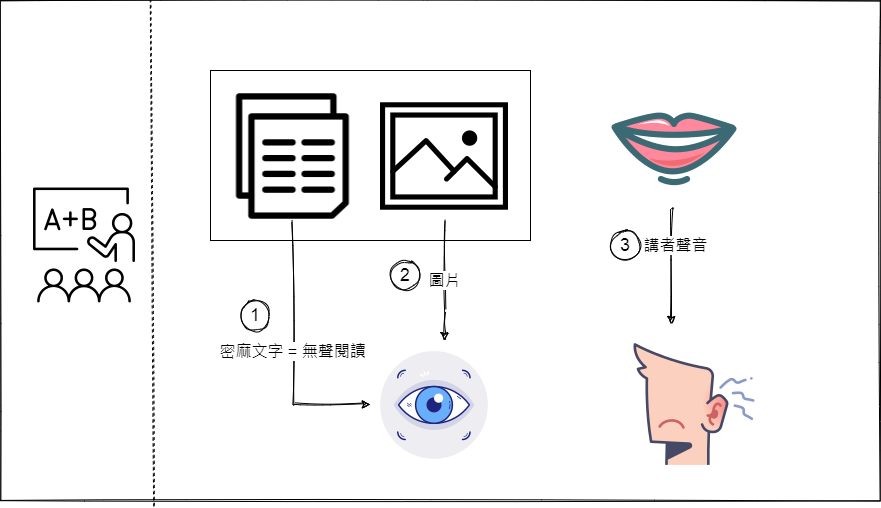

關於作者和本書
作者Jared Cooney Horvath是澳洲墨爾本大學的博士, 從google scholar上的關鍵字, 研究領域偏向神經科學, 心理學和教育
每個章節大致上的脈絡如下, 讀起來不拖泥帶水或空洞:
從一個現象開始, 例如: 酒吧和簡報會議的相似性(文本與口語), 一首歌中的歌詞誤解(圖像與口語), 叔叔在自家後院是高爾夫之神(情境/狀態), 幾個常識問答題(錯誤), 一個謎題(促發), 在體驗現象過後開始說明背後的運作原理, 接著給予好幾個在實際生活中要如何運用的關鍵提示與常碰到的疑問, 最後透過重點整理將該章的內容條列梳理
Jared Cooney有Youtube, 簡介的大標題非常切合讀完這本書的體驗: From Theory to Practice
心得
整本書都是作者的實驗室, 讀起來很有趣也特別有感, 舉個例子, 在<錯誤>這一章有個段落如下
我們之前學到, 只有大錯會產生足以觸發錯誤警報的錯誤正波, 也就是說, 很多小錯誤都被我們的預測掩蓋, 始終沒被有意識地覺察
幸連的是, 只要用個簡單方法, 即使最小的錯誤都能揪出來, 那就是反饋(feedback), 如果有人明確指出我們的錯誤, 例如, 我告訴你這段開頭的”幸運”誤植為”幸連”
另一個很棒的體驗是環環相扣, 前後呼應, 舉個例子, 在<回想>這一章, 作者請你真的用三種方式複習本書內容, 再有條不紊地說明其中道理, 實務和理論能夠切合在一起, 在<壓力>這一章, 作者用圖像加上故事的協助, 讓人很好理解壓力過大和零壓力中化學物質對身體的影響
之前看過在Coursera上面Barbara Oakley教授開設的一門課程, Learning How to Learn, 其中有提到的重要概念: chunking和recall, 在這本書也有出現, 並且以更生動地說明讓我了解背後的運作原理和重要性

Photo by Austin Distel on Unsplash
協助釐清一場簡報中基本元素之間的關係: 講者, 投影片, 聽眾, 筆記, 以及如何做能夠帶來最大的益處
如果我是一個聽眾, 接收的訊息來源有講者的口語聲音和投影片上的文字訊息, 若文字訊息密密麻麻, 那麼我同一時間只能真正理解其中一種訊息內容
若可以將密密麻麻的文字訊息使用少量關鍵字和圖片取代, 就能夠增進聽講者對簡報內容的解讀,理解和學習, 除此之外, 或許有機會提高參與度, 接受度與喜愛度
理解人類沒辦法一心多用, 我們其實是在不同任務之間迅速來回切換, 這樣可能會導致三種代價
錯誤可以協助我們更新心智模型, 以確保預測正確反映真實世界的事實, 你知我知獨眼龍也知, 實際上面對錯誤常見的兩種反應, 處理或忽視, 我自己很常都會選擇忽視和逃避, 原因是我會將錯誤視為對自我本身的威脅, 而要能偏向處理反應, 必須不把自己牽扯進去, 通常才能夠處理錯誤並從中學習(旁觀者清), 概念上和與焦慮和解的表現目標和精熟目標相似
表現目標(performance focus): 最優先的考量是彰顯自己當下可以將事情做得很好
精熟目標(mastery focus): 最關心的是如何提升自己的技能, 想法常常是我的目標是駕馭這些技能而非我需要表現優異才能證明自己
精熟目標可以幫助你在挫折之後繼續堅持下去, 減少對個別失敗案例的不安, 增加找出錯誤的意願, 避免因為對自己過度批評而導致你對自己修正錯誤的能力失去信心
我認為可以重複回想和強化的章節:文本與口語, 圖像與口語, 情境/狀態, 多工能力, 交錯, 錯誤, 回想, 壓力
延伸閱讀
摘要
文本與口語
講者站在文字密密麻麻的投影片前說話, 這個情境會如何影響聽眾?
閱讀是一種有聲活動
實驗一:
兩種口語的聲音來源, 目標是同時聽懂各自在說什麼
例如: Youtube and Podcast
注意力在兩種聲源之間跳接的時刻, 幾乎就像你腦子裡有個實體開關
雙耳分聽:我們雖然可以同時聆聽很多人說話, 同一時間卻只能真正理解一個人的說話內容
聽覺皮質區: 負責處理聲音的基本特性, 例如: 音調和音量
Broca/Wernicke network: 幫助我們理解口語 => 瓶頸
左額下迴: 負責控制該瓶頸
實驗二:
把實驗一其中一項換成閱讀
大腦處理無聲閱讀的聲音的方法, 跟它處理真正大聲說出來的言語幾乎沒有差別
同時聽兩個人說話等效於一面閱讀一面聽人說話
提示
簡報的元素: 講者, 投影片, 聽眾, 筆記

投影片不使用(或只用極少)文字
投影片的目的:
當成小抄卡的懶人替代品(如果我忘了提到某個重要話題, 聽講的人可以在投影片讀到)
擔心記不住替代方案: 製作一系列方便拿在手上讀的小抄卡
極少量的關鍵字是OK的
我們只有在連續閱讀大量文字, 比如完整的句子, 段落或塞滿文字的投影片, 才需要在腦海裡把書面文字轉換為口說語言 p.63
講義不使用(或只用極少)文字
等演說完畢後再提供以文字為主的講義
抄筆記
分為表淺和深度, 抄寫深度筆記
表淺: 盡量記下最多的內容, 基本上就是快速抄錄演說的全部內容
深度: 理解並組織口說語言, 從中引申出更深層的意義 => 會造成瓶頸, 亦即演說者的話語會變成背景音, 但有助於理解並記憶抄錄下來的那些概念
圖像和口語
聽歌 => 聽到die
Youtube原本影片 => Jive
親眼看見某人唱歌, 改寫二十年來聽那首歌的記憶
視覺和聽覺是是雙向的影響
- 視覺可以驅動聽覺, 麥克格效應(McGurk Effect): 我們看見的畫面如何左右我們聽見的聲音
- 聽覺可以驅動視覺, 夏姆斯錯覺(Shams Illusion), 可以關靜音試試看XD
感覺統合: 所聽和所見融合為單一的穩定訊息
圖片搭配口語真的有必要嗎? 為了便利性和明確, 以科學怪人為例
便利性: 讀原始文字約莫30秒, 辨認圖的人物卻只需要大約0.2秒
明確性: 科學怪人版本多, 無法保證聽講者腦海裡想的是同一個版本
提示
投影片以圖片為主
好處是可以增進聽講者對簡報內容的解讀,理解和學習, 還可以增進聽講者參與度, 接受度與喜愛度
每一張投影片該放幾張圖片 => 一張
圖表與表格
圖表與表格跟其他圖片不一樣
因為它們的意義只存在特定細節
處理方式: 清楚突顯或指明圖表裡的相關細節 (pop-out effect)
圖片和簡報內容的相關性
trade-off, 研究證實做口頭簡報時搭配可愛搞笑或其他不相關圖片可以增進參與度, 缺可能減低學習效果
情境/狀態
叔叔在自家後院用鐵鍬打高爾夫球進桶子十分神準, 換到高爾夫球場後卻失效
我們學習的所在和內心的感受, 最終會變成我們所學的一部分, 環境的感官面向: 氣味, 聲音, 質地等會編進我們創造的每個記憶
情境依賴學習: 我們學習的所在, 最終會變成我們所學的一部分 => 潛水夫實驗, 排球少年山口的跳飄球
狀態依賴學習: 我們學習時內心的感受, 會成為我們最中學習到的內容不可分割的一部分 => 軍隊訓練都在極端高壓的情況下進行
如何擺脫依賴?
透過多樣化
敘述性記憶: 我們記住特定事實或事件的能力
分為兩種類別, 情節(episodic), 語義(semantic)
情節記憶與特定時間和地點緊密連結, 舉例: 第一次出國坐飛機
語義記憶是獨立於特定時間與地點外的事實或事件, 舉例: 台灣最高的山
語義記憶包含相關情節記憶裡全部的共通資訊, 類似抽象和具體的概念
我們在單一地點或情境中讀書, 訓練或練習, 我們的學習會跟這個地點或場景緊密結合
我們在不同地點或情境中讀書, 訓練或練習, 我們的學習會跟任何特定地點或場景脫鉤
提示
清楚知道正式上場的時間地點與場景
練習情境可以模擬上場時的情境, 愈接近愈好
在中學體育館的期末考
在大會議室的年終報告
在當地劇場的大型試演活動
必須在多個不同的未知場景展現技能
訓練最好也在同樣多的不相同情境進行
K書時聽音樂的影響
音樂必須有相當的可預測性, 不至於吸引你的注意力
一旦音樂出乎意料, 它會變成一種信號(某種吸引你的注意力且讓你分心的東西)
多工能力
小遊戲1
10秒完成兩項不同任務
紙張分成左右兩欄, 10秒內先寫完左邊的頁面, A-L, 寫完再寫右邊頁面, 1-12
小遊戲2
10秒完成兩項不同任務
紙張分成左右兩欄, 10秒內先在左邊寫A, 接著右邊寫1, 接著左邊寫B, 右邊寫2, 依此類推
注意力過濾器
一個重要的問題: 什麼東西判定某筆資訊有相關性?
類比: 遊戲(任務)有一組獨特的角色, 控制鈕和目標(規則集), 想玩某一款遊戲, 就把相關的卡匣插入遊戲機(前額葉皮質), 載入後, 螢幕顯示遊戲的主角, 壞蛋, 武器…等等(注意力過濾器)
答案取決於我們從事的特定任務所伴隨的獨特規則, 這些規則限定需要哪些行動才算達成
另一個重要的問題: 由誰來選擇玩哪一種遊戲?
主要挑選者是你, 透過腦部一個名為背側注意力網絡, 還有另一個名為腹側注意力網絡的系統在背景運作
舉例:看Youtube時遇到地震
沒辦法一心多用, 我們其實是在不同任務之間迅速來回切換, 每一次都更換我們在前額葉皮質的規則集
我們在不同任務之間切換會導致三種主要後果(trade-off)
代價一: 注意力暫失所耗損的時間
代價二: 有一段短暫時間裡兩套規則集會混合, 導致表現變差
代價三: 海馬迴活動減少, 妨礙記憶形成
舉例: 開車使用手機
提示
搭配慣性動作可行嗎
邊吃東西邊聊天
邊淋浴邊唱歌
邊慢跑邊思考工作計畫
這些都包含紋狀體操控的慣性動作
即使其中一項任務是慣性動作, 仍然不能確保一心多用的效率
交錯
網球訓練: 三種訓練為正拍, 反拍, 截擊且只能使用球場一小時, 大約只能接九十球
A方案: 三十次正拍後換成三十次反拍, 完成後再換三十次截擊
B方案: 十次正拍, 十次反拍, 十次截擊, 三組
chunking
排序者與存取者
FPQCVOIYMRFSA
FYIRSVPFAQCOM
13個字母 vs 4個chunck(FYI, RSVP, FAQ, COM)
分離項目聚集成統一概念的程序: chunking, 每個chunk裡都有相關==順序==
會造成什麼問題?
格外牢固, 一旦形成, 順序從此鎖定, 想提取其中任何一個成分動作, 會變得極為困難
舉例: 超商取貨時被店員問到電話末三碼時會當機會講錯
交錯
避免accidental chunk
正拍後永遠是反拍, 反拍後永遠是截擊
四個注意事項
- 正式上場驗收成果以前, 交錯的好處不會顯現
- 當最終成果展現的情況不可預測時, 交錯才能發揮效用
- 舉例: 參加網球比賽的選手和演奏貝多芬第五號交響曲的鋼琴家
- 除了身體技能, 也適用於認知技能, 例如: 做功課時交錯數學技能的學生
- 交錯要求的是在chunk之間做切換, 而非只是在單一chunk裡調整難度, 類似資料結構的BFS
提示
先教會, 再交錯

DFS first, then BFS
新技能必須達到一定程度流暢時, 交錯才有意義
研究發現, 當技能愈來愈不假思索, 再慢慢採用交錯練習, 循序漸進逐步加強, 效果最為明顯
善用模擬演示, 追蹤成長軌跡
錄製螢幕
拍攝影片
拆解accidental chunk耗時又費力
The Backwards Brain Bicycle - Smarter Every Day 133
錯誤
酒吧常識測驗, 你答對了嗎?
- 人類有多少種感官
- 誰發明燈泡
- 牛看到什麼顏色會發怒
- 含氧血是紅色, 那麼缺氧血呢
心智模型(mental models)
我們運用這些模型預測我們周遭的世界, 藉以引導我們的行為 (心智模型 <=> 預測 <=> 真實世界), 預測正確, 相關心智模型會強化
我們怎麼知道某個心智模型已經過時, 需要升級, 以確保預測正確反映真實世界的事實?
利用錯誤, 錯誤警報告訴我們, 預測和事實不一致
錯誤和單純不知道是兩回事? 舉例: 相對論和大象有幾個膝蓋
When: 只有大錯誤正波會觸發錯誤警報
Then:
- 腹側注意力網絡啟動(多工能力的背景系統)
- 身體和大腦會慢下來, 迫使我們的注意力轉向錯誤, 釋出資源, 方便我們分析衝突, 進而更新我們的心智模型
兩種常見反應: 處理或忽視
- 處理
- theta mode: 反映大腦消化消化新資訊, 更新心智模型時的具體變化
- 大腦處理獎勵的區域活動減少, 引導注意力的區域活動會增加
- 處理錯誤時比較不在乎成就
- 忽視
- beta mode: 告訴大腦一切安好, 不需要改變任何心智模型
- 大腦處理獎勵的區域活動增加, 引導注意力的區域活動會減少
- 有效地防堵其他錯誤, 全神貫注地保留你的預測
甚麼因素決定我們選擇處理或忽視某個錯誤?
有十幾個, 主要因素是個人化(personalization), 意即如果我們不把自己牽扯進去, 通常能夠處理錯誤並從中學習 (旁觀者清), 舉例: 大象有幾個膝蓋, 另一方面, 若我們將此錯誤視為對自我本身的威脅, 通常我們不但會忽視那個錯誤, 未來還會避開可能導致同一個錯誤的情境
零錯誤人生
把錯誤警報解讀為對自我的直接威脅, 學會避免所有可能導致失敗的場景, 只趨向那些符合當下心智模型, 保證成功的場景
充滿錯誤的人生
錯誤分析流程
在錯誤中學習通常分成四個階段
- 覺察
- 分類
- 歸納為數量可以接受的功能性類別
- 修正
- 需要知識和練習
- 自主
- 過去沒人犯過這種錯, 不會有簡單的引導或支持, 必須做好準備往前推進
前三階段有老師或指導員會更有助益
提示
利用錯誤認知促進學習
人們接受新資訊時, 如果沒有事先啟動心智模型並做出預測, 就會單獨理解那筆資訊, 不會將它與過去學到的觀念或見解連結
啟動心智模型 => 做出預測 => 新觀念才能與舊觀念產生連結 => 更新心智模型
有些錯誤修正後能記住, 有些不行
主因是對某個主題領域的理解深淺程度, 在發生錯誤警報後所引發的好奇心強度
我對某個主題如果只有粗淺認識, 我們的心智模型就比較弱, 因此, 對自己的預測缺乏信心
舉例: 包粽子
另一方面, 如果我們對某個主題有深刻理解, 我們的心智模型會很強, 對自己的預測信心爆棚
舉例: git
列出你所屬領域的錯誤類別
用意是相較於處理一百個錯誤, 我們可能只需要對治一個基本原因(root cause)
通往錯誤警報的捷徑: 反饋
我們之前學到, 只有大錯會產生足以觸發錯誤警報的錯誤正波, 也就是說, 很多小錯誤都被我們的預測掩蓋, 始終沒被有意識地覺察
幸連的是, 只要用個簡單方法, 即使最小的錯誤都能揪出來, 那就是反饋(feedback), 如果有人明確指出我們的錯誤, 例如, 我告訴你這段開頭的”幸運”誤植為”幸連”
有效反饋
反饋要能發生作用, 必須先被接受而不是被忽視, 反饋要能發揮效益, 需要包含以下三種資訊
- 目標在哪: 清楚揭示要達成的目標或標準
- 表現如何: 明確點出個人表現與預期目標之間的落差, 以利出發反饋關聯負波
- 下一步怎麼做: 建議如何一步步消除落差
反饋 vs 讚美
讚美是個工具, 目的在肯定個人的努力與進步
回想
一個比喻: 大腦是個交響樂團
將記憶描述為一種三個階段的程序
- 編碼: 資訊必須輸入大腦
- 儲存: 資訊必須留在大腦
- 提取: 資訊必須再從大腦輸出
- 複習(review)(外在): 重新聆聽樂曲, 重新看這本書, 依賴外在世界來啟動記憶
- 再認(recognition)(外在/內在混合): 德國首都是哪裡? 選擇題形式, 相似度比對的方法
- 回想(recall)(內在): 德國首都是哪裡? 填空題形式, 沒有外來協助, 從大腦各區喚出各式各樣的旋律: 德國小說, 德國電影, 德國歌曲, 這些相關旋律稱為聯想(association)
- 有機會回想出錯誤的資訊, 因而創造出錯誤記憶 => 以反饋輔助回想
- 自由回想 vs 線索回想(利用關聯)
強調資訊的編碼與儲存, 形成的記憶短暫又不深刻
若目標只是短暫記住某些近期內就要運用的東西, 這不會有問題
另一方面, 如果你要創造深刻持久, 終生可以取用的記憶呢? 關鍵在提取, 提取是形成深刻, 持久又易於存取的記憶的關鍵
提示
科技似乎正在改變我們記憶的方法與內容
電子裝置便於複習與再認
善用包含回想與反饋的閃示卡
flashcard: 一面寫一個問答題, 背面寫相關答案
具體展示: ANKI
善用會議後回想
課程, 會議或訓練結束後立刻進行, 要求聽講者收起筆記, 花幾分鐘時間自由回想課程裡的關鍵資訊與觀點
與人討論後的recap, 好處是幫助自己回想和確認理解是否一致
如果學習與記憶不是你的目標, 就善用再認
有時候回想不重要, 舉例: 使用者介面設計, 辦公室布置
讓其他人迅速又輕鬆找到東西, 遠比訓練他們回想那些東西來得重要
促發(priming)
一道謎題
有個男孩和他父親同時染上某種疾病, 他父親迅速惡化, 不幸過世
男孩還活著, 卻需要緊急手術, 因此被送進醫院
外科醫師進手術室看見男孩, 大聲說: 不!我不能做這個手術, 那是我兒子
聯想被喚醒後, 不會馬上關閉, 相反地, 它們會像被撥動的吉他弦, 持續地在大腦迴響一段時間
大腦會留住前不久的思考模式, 將它當作引導, 用來覺察並理解新輸入的資訊
促發的缺點: 就算啟動的聯想不太適合當下的任務, 它還是會作用
和教學密切相關的促發類型
- 概念促發: 啟動事實
- 父親和男孩
- 期待促發: 啟動期待
- 醫院, 傳統上醫學一直是男性主導的領域, 促發外科醫生這個詞彙
- 策略促發: 啟動特定程序或方法
- 謎題一開始就問:哪裡出錯? 人們讀完後, 會主動尋找邏輯, 語言或文法錯誤
高度掌控, 人為操作的實驗室情境下, 促發雖有效, 但在紛亂的真實世界裡, 效果卻可能是脆弱又不可預測, 最好把促發在教學上視為輔助策略
概念促發(concept priming)
六____
圓形 三角形 正方形 五角形
生活案例: 廣告的基石
期待促發(expectancy priming)
改變人們面對困難時的反應
舉例: 數學/性別
受到低期待促發的女性碰到難題時, 比較可能解讀為自己天生的弱點, 遇到挑戰立刻放棄
受到高期待促發的男性碰到難題時, 更願意解讀為戰鬥號角, 更努力加把勁面對挑戰
期待可以導向內在, 用來理解我們自己的想法和行為
期待也可以導向外在, 用來理解他人的想法和行為
生活案例: 新聞標題
策略促發
啟動特定程序或方法
提示
審慎建立第一印象
不管你喜歡或討厭, 第一印象就是存在
好消息是第一印象可以打破, 可能不是用你想像的方式:時間淡化, 而是引發更強烈的反向情感
感受創造印象;感受翻轉印象
善用遮盲評量
跳過封面, 塗掉顯眼的姓名, 隱藏某份報告的作者或單位
促發有辦法消除嗎
覺察, 對所有種類的促發都有效
若我覺察不出的那些呢? 打預防針(類似建立心智模型, 機師的例子)
舉例:
設定一個目標是做30分鐘簡報, 預想過程中可能遇見的阻礙, 比如說:我可能被干擾, 思路斷掉
想出一套遇見該情況時可以採取的行動, 例如: 如果我的思路被打斷, 就請聽講者提醒我剛才說到哪裡
故事
城市地標與城鎮
記憶與聯想
故事就像心靈85大樓, 它們在我們的腦海創造突出且難以抹滅的印象, 因此成為構築並組織聯想網絡的理想記憶地標
故事組成的元素
- 有實質上的要旨
- 以行為組成, 亦即獨立的事件, 時刻或事實
- 狗在吠叫, 貓爬上樹, 松鼠暈倒
- 連結起來變成清晰的因果排列, 稱為情節(plot)
- 以行為組成, 亦即獨立的事件, 時刻或事實
- 有精神上的要旨
- 反應或驅動情節的心理或情感元素
- 這些元素可以讓同一個情節衍生出數不清的版本
- 創造出角色, 動機與意義
- 反應或驅動情節的心理或情感元素
- 有聽故事的人
故事不是萬靈丹
提示
好故事組成的元素
在穩定與不穩定之間來回擺盪
故事一開始一切穩定(基準線): 人物生活規律, 世界平靜祥和
某個行為或事件發生(轉折點): 破壞祥和, 世界陷入不確定
找回平靜所做的努力(劇情鋪陳)
重拾穩定的最終事件(高潮)
進入下一個穩定狀態(結局)
壓力
壓力與學習的倒U曲線
情緒與感受
關係是雙向的
- 情緒(emotion): 我們面對某個特別時刻或事件時, 全身上下出現的生理感覺, 例如:心臟狂跳, 頭皮發麻, 呼吸急促
- 杏仁核與下視丘
- 身體能製造化學物質類別有限, 很多學者相信只能製造出六種基本情緒
- 喜悅, 恐懼, 憤怒, 驚訝, 悲傷, 厭惡
- 其他是從哪裡來的?? 例如: 尷尬, 嫉妒, 謙卑, 焦慮, 軟弱…
- 感受(feeling): 我們對這些身體感覺的心理解讀
- 拜心理解讀之賜, 六種基本情緒能夠衍生出近乎無限多的感受
知道了, 然後?
壓力是感受, 不是情緒
同樣的情境, 同樣的化學物質, 同樣的生理感覺, 解讀改變了一切
提示
新奇感是大腦保持反應靈敏的主要因素, 每回你從事新的活動, 學習新技能或投入全新局面, 都會產生適度壓力
例如: 學習新樂器或新語言, 煮一道新料理
持續投入新奇, 無法預測的情境, 你的大腦比較有機會保持靈活, 記憶力也更強
運用生理與心理減壓技巧
直接針對身體
- 深呼吸: 最有效也最容易的辦法
- 漸進式肌肉鬆弛(progressive muscle relaxation)
因感受也會反過來影響情緒, 有不少減壓技巧是以心靈為標的, 以轉念與重新解讀為工作原理: 冥想, 正念, 暴露療法
分散
利用分散在書中的圖像說明本章重點
我們需要多常提取記憶, 它們才能保持活躍, 便於提取
艾賓斯遺忘曲線
叢林生長的速度相當快: 多快? 學習後的24小時就遺忘大約70%
甚麼方法最能幫助我們記憶?
第一個發現: 花愈多時間練習某一批無意義單字, 就記得愈勞
第二個發現: 練習時程的安排對記憶有極大影響
一次3小時=>短時間內記憶提升, 遺忘曲線馬上又會出現
連續3天每次1小時=>記憶提升, 遺忘曲線更慢出現 => 分散練習
三個關鍵, 多樣性(情境/狀態), 提取(回想), 鞏固, 大部分的鞏固通常發生在睡夢中, 目前沒有人百分之百確知背後的機制, 鞏固不會立即發生, 而是需要幾個月(長則幾年)來完成, 可以藉由重複提取來加速
分散練習的經驗法則
| 期限 | 分散間隔 |
|---|---|
| 一星期 | 每天 |
| 一個月 | 每周 |
| 一年 | 每個月 |
舉例: 簡報在一星期後
注意的是練習的東西是已經學會的事物還是全新主題, 若為全新主題, 在分散練習策略之前, 先給予充足的時間學習
Recap
- 閱讀文字的同時沒辦法聆聽他人說話
- 聽演說時觀看圖像, 有助於增進學習與記憶
- 可預測的空間配置釋出心理資源, 有助於增進學習與記憶
- 人們練習的所在地和練習時的感受, 會形成他們所學內容不可或缺的面向
- 人類不能一心多用, 這麼做會影響學習與記憶
- 練習過程中交錯各種技能, 有助於增進臨場表現與技能遷移
- 接受錯誤有助於增進學習, 記憶與預測
- 回想(有別於複習和再認)能建立更強, 更深, 更容易存取的記憶
- 預先啟動知識, 期待和策略來增進他人的學習
- 利用故事增進理解, 引導思考並形成記憶
- 適度壓力有助於增強記憶和一般學習(不過高度壓力與零壓力可能有害)
- 把練習時間切割為幾個分散段落, 可以增強記憶, 提升學習效果